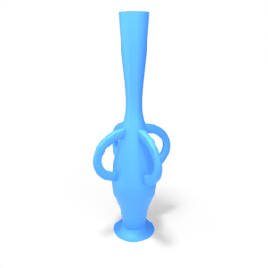
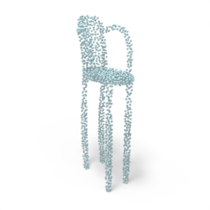
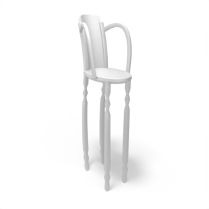
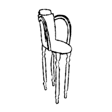
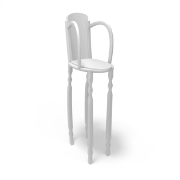

The task of crafting procedural programs capable of generating structurally valid 3D shapes easily and intuitively remains an elusive goal in computer vision and graphics. Within the graphics community, generating procedural 3D models has shifted to using node graph systems. They allow the artist to create complex shapes and animations through visual programming. Being a high-level design tool, they made procedural 3D modeling more accessible. However, crafting those node graphs demands expertise and training. We present GeoCode, a novel framework designed to extend an existing node graph system and significantly lower the bar for the creation of new procedural 3D shape programs. Our approach meticulously balances expressiveness and generalization for part-based shapes. We propose a curated set of new geometric building blocks that are expressive and reusable across domains. We showcase three innovative and expressive programs developed through our technique and geometric building blocks. Our programs enforce intricate rules, empowering users to execute intuitive high-level parameter edits that seamlessly propagate throughout the entire shape at a lower level while maintaining its validity. To evaluate the user-friendliness of our geometric building blocks among non-experts, we conduct a user study that demonstrates their ease of use and highlights their applicability across diverse domains. Empirical evidence shows the superior accuracy of GeoCode in inferring and recovering 3D shapes compared to an existing competitor. Furthermore, our method demonstrates superior expressiveness compared to alternatives that utilize coarse primitives. Notably, we illustrate the ability to execute controllable local and global shape manipulations.
We build three novel programs that enforce a complex set of rules and enables users to perform intuitive and controlled high-level edits that procedurally propagate at a low-level to the entire shape. In our shape programs, changing a human-interpretable parameter produces a set of low-level instructions which ensure the modified shape is structurally valid. Our programs produce a high-quality and intuitively editable 3D meshes by construction.
For example, in our chair program, given the input shape (left), modifying the seat in isolation will lead to an undesirable result (middle). Our program (right) properly propagates the edit to the remainder of the shape.
Our programs are implemented in Blender Geometry Nodes as a directed acyclic graph (DAG) comprised of nodes and edges. Selected operation nodes are parameterized by the input parameters, allowing the user to interact with the programs and control the resulting shapes. Using our curves, attachment points, and triples methodology, we provide a Blender add-on aimed to lower the bar for the generation of new shape programs by non-experts.
GeoCode learns to map a point cloud or a sketch input to an intuitively editable parameter space of the program. The input passes through the corresponding encoder to obtain an embedding vector which is then fed to a set of decoders that predict the interpretable parameters. The program enforces a set of rules that, given a parameter representation, produces a high-quality shape by construction.
@article{pearl2022geocode,
title={GeoCode: Interpretable Shape Programs},
author={Pearl, Ofek and Lang, Itai and Hu, Yuhua and Yeh, Raymond A. and Hanocka, Rana},
booktitle={arXiv preprint arxiv:2212.11715},
year={2022}
}